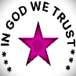
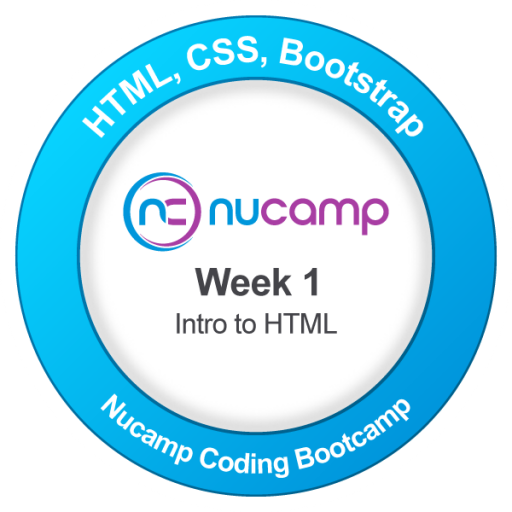
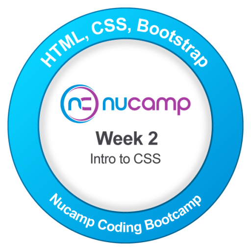
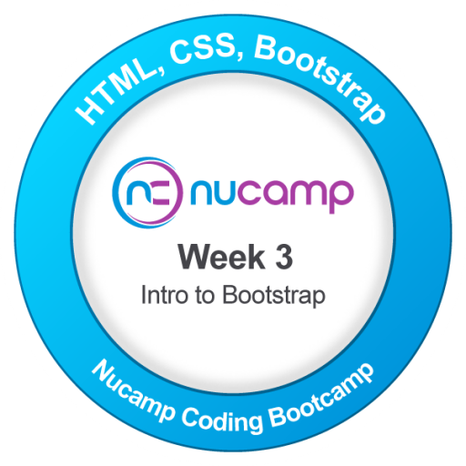
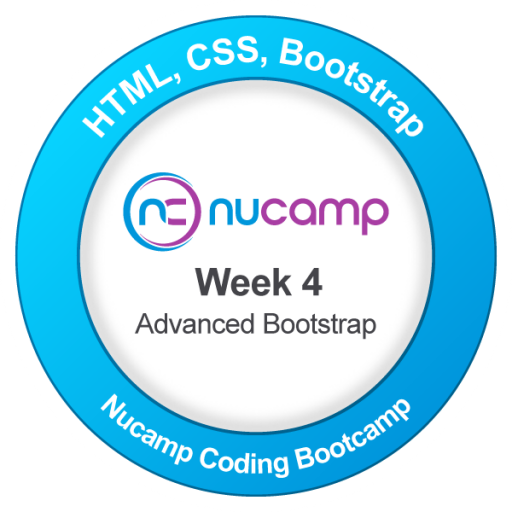
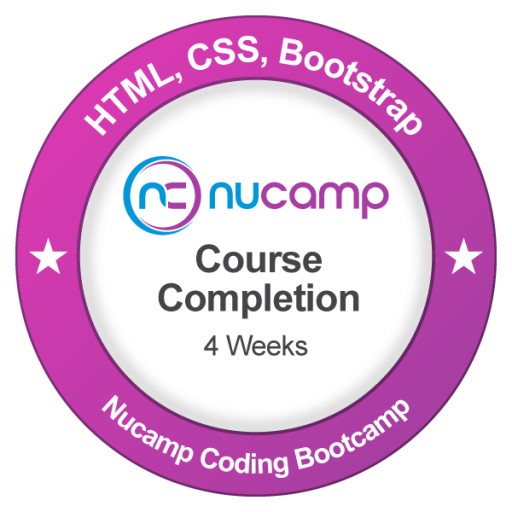

In Week 1, we were introduced to HTML (Hypertext Markup Language) and learned how to create the structure and content of web pages. We explored various HTML elements, tags, and attributes that allow us to define headings, paragraphs, lists, links, images, tables, forms, and other essential components of a web page.
We also learned about the importance of semantic HTML and how it helps improve accessibility and search engine optimization (SEO). By using appropriate HTML elements for different types of content, we can create web pages that are more meaningful and easier to navigate for both users and search engines.
Additionally, we gained hands-on experience in creating our own web pages using HTML and practiced structuring content in a logical and organized manner. This foundational knowledge of HTML will serve as a building block for our future web development projects.
Week 1 TaskAs a recognition of our efforts and achievements in Week 1, we received an award for our dedication and commitment to learning HTML. This award serves as a motivation to continue improving our skills and knowledge in web development.
We are proud of our accomplishments and look forward to applying the knowledge gained in Week 1 to future projects and challenges in the field of web development.
Overall, Week 1 provided us with a solid foundation in HTML and set the stage for further exploration and learning in web development. We are excited to continue our journey and build upon the skills we have acquired in Week 1.

In Week 2, we were introduced to CSS (Cascading Style Sheets) and learned how to apply styles to the HTML structures we created in Week 1. We explored various CSS properties and learned useful concepts for controlling the appearance, layout, spacing, colors, fonts, and overall presentation of web pages.
To make the learning experience more engaging and practical, we used interactive games and exercises to develop a better understanding of the fundamental concepts behind web styling. These activities helped reinforce our knowledge and allowed us to apply CSS concepts in a more practical way.
We were also introduced to Git, a version control system used to track changes, manage project files, and collaborate effectively while working on software development projects. This provided us with an important foundation for managing our code and maintaining a structured development workflow.
Week 2 TaskAs a recognition of our efforts and achievements in Week 2, we received an award for our dedication and commitment to learning CSS. This award serves as a motivation to continue improving our skills and knowledge in web development.
We are proud of our accomplishments and look forward to applying the knowledge gained in Week 2 to future projects and challenges in the field of web development.
Overall, Week 2 provided us with a solid foundation in CSS and set the stage for further exploration and learning in web development. We are excited to continue our journey and build upon the skills we have acquired in Week 2.

In Week 3, we were introduced to Bootstrap, CSS Grid, and Flexbox. We learned how to create responsive web pages that can adapt effectively to different screen sizes and resolutions. We also explored how to build and customize navigation bars, structure web pages using grids, and apply responsive layouts using Flexbox.
In addition, we learned how to customize styles and make use of Bootstrap utility classes, particularly flex utilities, to control the layout, alignment, spacing, and positioning of elements. These concepts helped us develop more flexible, organized, and user-friendly web interfaces that provide a consistent experience across different devices.
During Week 3, we were introduced to Bootstrap, CSS Grid, and Flexbox. We learned how to create responsive web pages that can adapt effectively to different screen sizes and resolutions. We also explored how to build and customize navigation bars, structure web pages using grids, and apply responsive layouts using Flexbox.
In addition, we learned how to customize styles and make use of Bootstrap utility classes, particularly flex utilities, to control the layout, alignment, spacing, and positioning of elements. These concepts helped us develop more flexible, organized, and user-friendly web interfaces that provide a consistent experience across different devices.
Week 3 TaskAs a recognition of our efforts and achievements in Week 3, we received an award for our dedication and commitment to learning Bootstrap, CSS Grid, and Flexbox. This award serves as a motivation to continue improving our skills and knowledge in web development.
We are proud of our accomplishments and look forward to applying the knowledge gained in Week 3 to future projects and challenges in the field of web development.
Overall, Week 3 provided us with a solid foundation in responsive web design and set the stage for further exploration and learning in web development. We are excited to continue our journey and build upon the skills we have acquired in Week 3.

In Week 4, we focused on Bootstrap dynamic components and preparing our projects for deployment. We learned how to use Bootstrap to create responsive navigation elements and enhance the overall functionality and user experience of our applications. We also gained practical experience in deploying completed projects to the cloud, giving us a better understanding of the steps involved in moving an application from development to a live environment.
By the end of the week, we had strengthened our understanding of Bootstrap and cloud deployment and were better equipped and prepared to begin the final project for the bootcamp.
Week 4 focused on Bootstrap dynamic components and preparing our projects for deployment. We learned how to use Bootstrap to create responsive navigation elements and enhance the overall functionality and user experience of our applications. We also gained practical experience in deploying completed projects to the cloud, giving us a better understanding of the steps involved in moving an application from development to a live environment.
By the end of the week, we had strengthened our understanding of Bootstrap and cloud deployment and were better equipped and prepared to begin the final project for the bootcamp.
Week 4 projectAs a recognition of our efforts and achievements in Week 4, we received an award for our dedication and commitment to learning Bootstrap dynamic components and cloud deployment. This award serves as a motivation to continue improving our skills and knowledge in web development.
We are proud of our accomplishments and look forward to applying the knowledge gained in Week 4 to future projects and challenges in the field of web development.
Overall, Week 4 provided us with a solid foundation in Bootstrap dynamic components and cloud deployment and set the stage for further exploration and learning in web development. We are excited to continue our journey and build upon the skills we have acquired in Week 4.

At the end of the week, a certificate of completion was handed over
